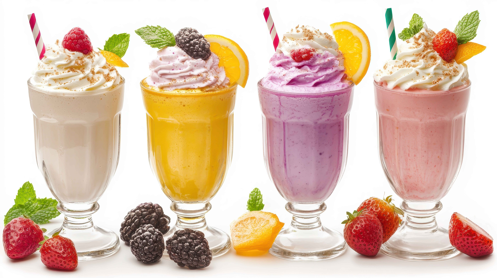
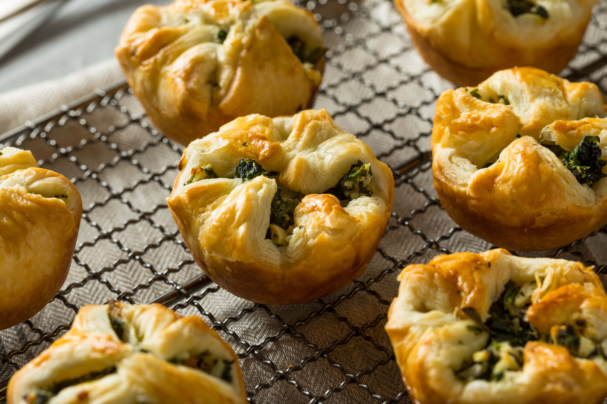
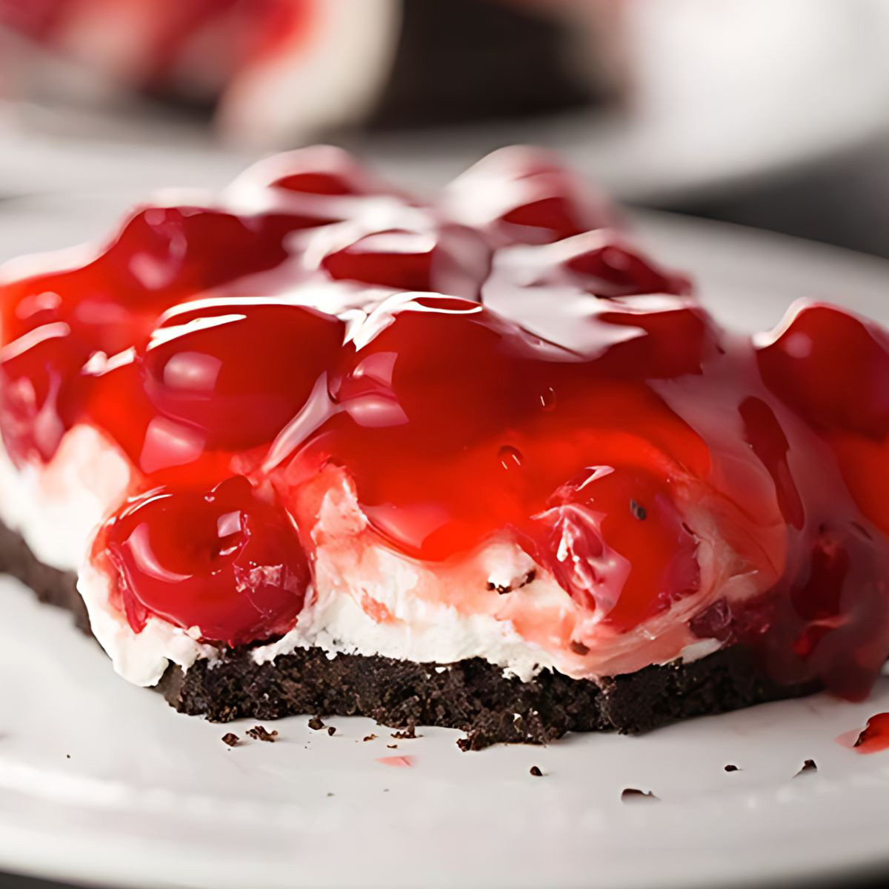
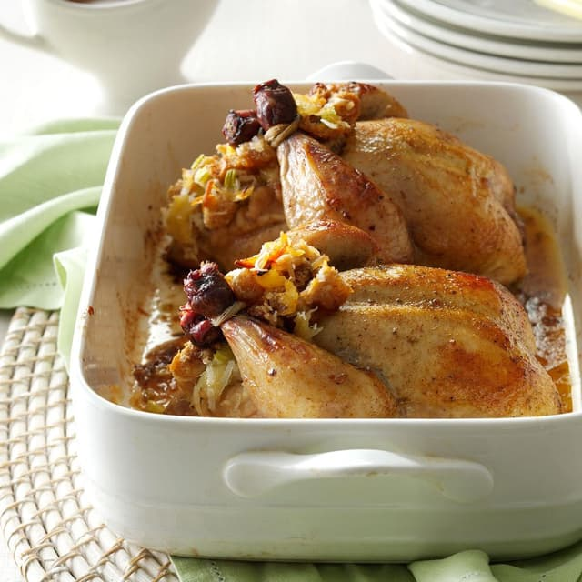

Welcome to the Woodworth Family Cookbook!
Table of Contents
Beverages
Appetizers
Desserts
Entrees
Beverages
Almond Milk Fruit Smoothies
From the Kitchen of Katt
Total Time: 15 min.
Prep Time: 15 min.
Cook Time: --
Yields: 2 Servings

Ingredients
- 1 cup of Vanilla Almond Milk
- 1 Banana
- Ice as needed
-
Your favorite fruit combination!
A few of mine are:
- Dragonfruit & Kiwi
- Raspberry
- 1 cup of Frozen Raspberries
- Blueberry
- 1 cup of Frozen Blueberries
- Strawberry, Mango, & Kiwi
- 1/2 cup of Frozen Mangoes
- 1/2 cup of Frozen Strawberries
- 1 Kiwi
Instructions
-
Put all ingredients into the blender and blend until smooth.
- Add Ice to thicken.
- Add more Vanilla Almond Milk if it becomes too thick.
Tips & Notes
-
White Dragonfruit will give it an earthy tone while Purple
Dragonfruit will make it sweeter.
-
Every now and then, I'll add a teaspoon of Vanilla Extract to
make the smoothies a little sweeter.
-
You can always garnish the finished smoothies with Whipped Cream
(I use Ready Whip) & Fresh Fruit!!
Return to the Table of Contents
Appetizers
Spinach Puffs
From the Kitchen of Katt
Total Time: 50 min.
Prep Time: 30 min.
Cook Time: 20 min.
Yields: 9 Puffs

Ingredients
- 1 Sheet of Frozen Puff Pastry (Thawed)
- 1 Brick of Cream Cheese (8 oz.)
- 1 Large Egg
- 2 Cups of Baby Spinach (Chopped)
- 1/3 cup of Feta Cheese
- 2 Strips of Pre-Cooked Applewood Smoked Bacon (Chopped)
- 1 tbsp Olive Oil
- 1/2 tsp Dill
- 1/2 tsp Black Pepper
- 1/2 tsp Garlic Powder
- 1 tsp Onion Powder
- 1 tbsp of Butter (Melted)
- Extra Dill
- Extra Salt
Instructions
- Preheat oven to 400°F.
-
Soften Cream Cheese in Microwave for 30 seconds.
(Don't forget to take off the wrapping.)
-
Mix together the following ingredients:
- Softened Cream Cheese
- Large Egg
- Olive Oil
- Dill
- Onion Powder
- Garlic Powder
- Black Pepper
-
Add in the following ingredients & mix until combined:
- Spinach
- Feta
- Applewood Smoked Bacon
- Cut the Puff Pastry Sheet into 9 equal squares.
- Spray a muffin tin with Pam.
-
Line each muffin slot with 1 of the Puff Pastry Squares to form
9 individual cups.
- Fill each cup with the Spinach Mixture.
-
Pull the 4 corners of each Puff Pastry Cup over the top & meet
the points in the center.
-
Brush the tops with the Butter & sprinkle with the Extra Dill &
Salt.
- Bake for 20 min.
Tips & Notes
-
You don't have to precook the bacon but, it significantly cuts
down the prep time.
My household regularly cooks this bacon, so when I know I'm
gonna make these, I make sure we save a couple of slices for
them.
Return to the Table of Contents
Desserts
Cherry Tundra Whipped Cheesecake
From the Kitchen of Katt
Total Time: 3 hrs. 30 min.
Prep Time: 30 min.
Chill Time: 3 hrs.
Yields: 6 Servings

Ingredients
-
For the Cheesecake
- 1 Brick of Cream Cheese (8 oz.)
- 1 Tub of Cool Whip (8 oz.)
- 1/3 cup of Sugar
-
For the Topping:
-
1 Can of Cherry Pie Filling (21 oz., Lucky Leaf Brand)
-
For the Crust:
- 1 Premade Oreo Pie Crust (6 oz.)
OR
- 4 tbsp of Unsalted Butter (Melted)
- Approx. 24 Oreo Cookies
Instructions
For the Optional Homemade Oreo Crust:
-
Crush the Oreo Cookies in a food processor until they are small
crumbs.
-
Transfer into a bowl & add the butter.
Make sure that all of the crumbs get coated evenly.
- Press into a 9 inch round pie tin.
- Let chill completely. Approx. 1 hr.
For the Cheesecake:
-
Beat together the following ingredients until mixed & Sugar is
dissolved.
- Cream Cheese
- Cool Whip
- Sugar
- Pour into the crust.
-
Use a rubber spatula to smooth out the top, starting from the
edge, moving in a circular motion, until you reach the center.
- Pour the Cherry Preserves on top.
- Chill for 2 hours.
Tips & Notes
-
Taste test after mixing the cheesecake.
You can add more sugar if its not sweet enough.
-
Alternatively to the storebought preserves, you can always make
your own.
I havent bothered making a homemade version yet, since this
recipe's original purpose was for its ease.
(Not to mention: Everyone in my household loves the Lucky Leaf
Preserves.)
-
Tired of Cherries? Switch up the preserves!
The beauty of this cheesecake is that its versatile!
Any fruit preserve will pair beautifully.
Return to the Table of Contents
Entrees
April's Pineapple Stuffed Cornish Game Hens
From the Kitchen of Mama Donna
Total Time: 2 hrs.
Prep Time: 30 min.
Cook Time: 1 hr. 30 min.
Yields: 2 Hens

Ingredients
- 2 Cornish Game Hens (20 oz. each)
- 1/2 tsp Salt (Divided)
- 1 can of Crushed Pineapple (8 oz.)
- 3 cups Day-Old Panera Lemon Bread, (1/2" Cubed)
- 1 Celery Rib (Chopped)
- 1/2 cup Coconut
- 2/3 cup Butter (Melted, Divided)
- 1/4 tsp Poultry Seasoning
- 2 tbs A-1 Steak Sauce
- 2 tbs Corn Starch
- 2 tbs Brown Sugar
- 1 cup of Water
- 1 tbs Lemon Juice
Instructions
- Sprinkle inside of Hens with 1/4 tsp Salt and set aside.
- Drain Pineapple, reserving juice.
-
In a bowl, combine the following ingredients:
- Pineapple
- Bread Cubes
- Celery
- Coconut
- Add 6 tbsps of the Butter, and then toss to coat,
-
Loosely stuff the Hens and tie the legs together with kitchen
string.
- Place on a rack in a greased shallow roasting pan.
-
Place remaining stuffing in a greased 1-1/2 cup baking dish.
Cover & set aside.
- Add Poultry Seasoning & remaining Salt to remaining Butter.
- Spoon some of the Butter mixture over the Hens.
-
Bake uncovered at 350°F for 40 min, basting 2 times with the
Butter mixture.
-
Stir Steak Sauce & Reserved Pineapple Juice into the remaining
Butter mixture. Baste hens.
- Bake Reserved Stuffin with the hens for 30 min.
- Baste the Hens twice.
-
Uncover Stuffing and baste with the remaining Butter mixture.
-
Bake for 15-20 min. longer or until a meat thermometer reads
185°F fo the Hens & 165°F for the Stuffing inside of the Hens.
- Remove the Hens from the pan and keep warm.
- Pour Drippings into a sauce pan and skim the fat.
-
Combine the following ingredients until smooth and then add to
the drippings:
- Cornstarch
- Brown Sugar
- Water
- Lemon Juice
-
Bring to a boil and cook while stirring for 1-2 min. or until
thickened.
- Serve with the Hens & Stuffing.
Tips & Notes
-
My sister once made made this for Thanksgiving and it became an
instant classic.
-
The recipe originally cam from a magazine "Taste of Home" by
Vicki Corners that our mother had brought back from her vacation
to Hawaii.
Return to the Table of Contents
Bon Appétit!